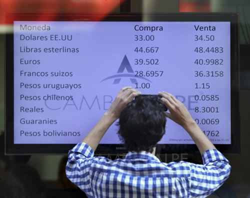

Real Chubut - Agencia de Noticias


El dólar saltó un 105% en 2018, la mayor suba desde el fin de la convertibilidad

El peso encabeza al cabo de 51 semanas del 2018, el ránking de monedas que más devaluaron, detrás del bolívar venezolano. En tanto, desde que Mauricio Macri asumió la presidencia el 10 de diciembre de 2015, el billete verde escaló un 297,85%.
El 2018 quedará marcado como el período de mayor devaluación del peso desde la salida de la convertibilidad y la moneda, como la que más se depreció en el mundo después del bolívar venezolano.
Cabe recordar que el dólar se disparó en este último año un 105,45% luego de transitar los dos anteriores con relativa calma, al tiempo que el riego país salta un 133% de 351 a más de 800 puntos básicos.
Hay que tener en cuenta que en 2016 el alza de la moneda estadounidense fue del 20,58% o $ 2,76 y en 2017 la suba alcanzó el 17,20% o $2,78, según el promedio de ámbito.com en bancos y agencias de la city porteña (ambos años por debajo de la inflación).
El peso encabeza al cabo de 51 semanas del 2018, el ránking de monedas que más devaluaron, detrás del bolívar venezolano aunque por encima de la lira turca (registró un alza de 39,93%) y del real brasilero (con un ascenso de 16,6%), según datos relevados por el analista Christian Buteler.
Asimismo, desde que Mauricio Macri asumió la presidencia el 10 de diciembre de 2015, el billete verde escaló un 297% o $ 29,07.
La cotización del dólar a lo largo del año fue altamente volátil producto de una serie de causas globales y locales, que iniciaron con la recordada conferencia de prensa del 28 de diciembre de 2017 en la que Federico Sturzenegger, titular en ese entonces del Banco Central, en compañía del jefe de Gabinete Marcos Peña y el otrora titular de la cartera de Finanzas, Luis Caputo, anunciaron que recalibraban las metas inflacionarias proyectadas, con un alza de precios del 15%, para llegar al objetivo final del 5% recién en 2020 y no en 2019 como estaba previsto en las metas originales.
A partir de ese momento se modificaron significativamente las expectativas de los agentes económicos por lo que la divisa comenzó a escalar. Ese mismo día el billete verde ganó 67 centavos a $ 19,46 y el BCRA tuvo que salir a vender divisas en el Mercado Único y Libre de Cambios (MULC) para contener el incremento de la cotización.
En enero el dólar alcanzó su nivel máximo hasta ese momento desde la salida de la convertibilidad, con un alza de 5,27% o $ 1, para cerrar el mes a $19,95. Febrero continuó con la tendencia alcista y terminó con un ascenso mensual de 2,35% o 47 centavos, a $ 20,42. Marzo, en tanto, encadenaba la tercera suba consecutiva: la moneda estadounidense se apreciaba 0,2% o 4 centavos y culminaba el mes a $ 20,46.
El cuarto mes del año comenzaba a verse afectado por la caída en los ingresos de divisas por parte del sector agroexportador, teniendo en cuenta una fuerte sequía que afectó a productores, quienes perdieron unos u$s 7.500 millones, según detalló un informe elaborado por la Bolsa de Comercio de Rosario. En ese mismo mes, en el que entró en vigencia el impuesto a la renta financiera de extranjeros y se disparó la corrida cambiaria, el Banco Central intervino en el mercado de cambios después de siete meses, vendiendo divisas en 14 de las 20 jornadas, algo que le costó más de u$s 2.000 millones.
El dólar en mayo dio un salto significativo al subir en 31 días, más de lo que lo había hecho en todo 2017. El ascenso de la cotización fue de 22,2% o $ 4,65, contra un 17,2% de aumento en todo el segundo año de la gestión de Macri.
La corrida cambiaria ya se había iniciado y se iba a llevar puesto al titular del BCRA, Federico Sturzenegger primero y a Luis Caputo más tarde. En junio, con el financiamiento externo cerrado y con necesidades de dólares para cubrir el déficit y los pagos de deuda, la divisa voló un 16,1% o $ 4,11 y cerró el mes a $ 29,66.
En esa instancia, operadores señalaron a este medio que “hubo una pérdida de confianza en el Gobierno” con relación al rumbo económico y también político, a raíz de las dificultades para controlar la inflación, y a la falta de señales claras con respecto a cómo se llevaría a cabo el ajuste del déficit fiscal.
El único acierto de la estrategia de Sturzenegger para contener al dólar, según señalaron analistas y economistas a este medio fue una oferta permanente por parte del BCRA de u$s 5.000 millones a un precio de $ 25, que se dio sobre finales de mayo, y que fue momentáneamente exitoso en frenar la corrida. Las reservas pasaron de u$s 61.000 millones a u$s 48.500 millones y Argentina debió ingresar a un programa con el FMI muy cuestionado por la oposición.
El 14 de junio, en una jornada convulsionada por la corrida cambiaria,Federico Sturzenegger presentó su renuncia a la presidencia del Banco Central. Mauricio Macri aceptó la dimisión y dispuso que Luis Caputo lo reemplace en la entidad monetaria al tiempo que el Ministerio de Finanzas fue reabsorbido por Hacienda al mando de Nicolás Dujovne. El mercado estaba pidiendo un cambio y el economista, que se desempeñaba al frente del Central desde el inicio de la gestión de Cambiemos en diciembre de 2015, se convirtió en el fusible que terminó por saltar.
Asimismo, el riesgo país, que mide la sobretasa que debe pagar un bono, en nuestro caso argentino, frente al rendimiento de los títulos a 10 años que emite el Tesoro de los Estados Unidos, saltó 16,4% de 524 puntos básicos al cierre de mayo hasta los 610 del último de día de junio.
Julio fue el primer mes completo en el que el exministro de Finanzas estuvo al mando del BCRA. Caputo entró a la entidad monetaria a mediados de junio en medio de una crisis cambiaria y con una bomba de Lebac que debía ser desactivada. Como el mercado le cerraba el financiamiento a la Argentina, el Gobierno acordó un crédito stand by con el FMI por u$s 50.000 millones (en octubre se amplió por un monto de u$s 5.700 millones, tras arduas negociaciones de Dujovne con la titular del órgano crediticio, Christine Lagarde, en Nueva York), de manera de poder controlar la escalada del dólar y su consecuente impacto en la inflación y en la suba de precios de la economía doméstica.
En el séptimo mes del año, el billete verde descendió 5,4% o $ 1,61, lo que significó la primera caída en el año (cerró a $ 28,05). La estrategia de Caputo, tuvo lugar desde el 20 de junio hasta el 10 de agosto, incluyo un fuerte torniquete que constó de suba de encajes bancarios, la subasta diaria de u$s 100 millones que mantuvo todo el mes y licitaciones, por cuenta de Hacienda, de instrumentos en pesos ofreciendo altas tasas de interés.
Durante este período se subastaron u$s 3.675 millones y las reservas cayeron desde los u$s 63.000 millones pos ingreso del primer desembolso del FMI hasta los u$s 56.874 millones. Es decir, se perdieron u$s 6.400 millones en un mes y medio. El tipo de cambio aumentó 5,4% (pasando de $27,71 a $ 29,20) y el FMI se vio obligado a revisar su estrategia producto de la continuidad de la salida de capitales y las presiones contra el peso".
En agosto el dólar se volvió a disparar: esta vez un 35,5% o $ 9,95 para finalizar la última rueda del mes a $ 38, mientras que el riesgo país trepó 38,2% desde los 558 puntos hasta los 771 (llegó a tocar un máximo intradiario de 800 puntos). Las razones se pueden enmarcar en la necesidad de inversores de buscar refugio en la moneda estadounidense debido a la crisis de la moneda turca, la lira, que impactó en los mercados emergentes y principalmente en Argentina. Internamente se sumó la causa judicial ("Cuadernos") por el supuesto esquema de pagos de sobornos que involucra a funcionarios del kirchnerismo y a empresarios, la gran mayoría del sector de la construcción. Y por último, la desconfianza creciente en la política económica del Gobierno y las dudas sobre el cumplimiento del acuerdo con el FMI.
Luis Caputo dio un portazo y presentó su renuncia a la conducción del Banco Central el 25 de septiembre, en medio de una disputa interna -nunca blanqueada- en las entrañas del Gobierno por el manejo de la política monetaria. El momento, sorpresivo, le sumó más incertidumbre a un mercado que desde hacía tiempo no encontraba calma y marcó un récord en la era Macri para el riego país, que cerró el cuatro de dicho mes en 783 puntos básicos. Su reemplazante fue Guido Sandleris, un hombre de Dujovne que hasta las últimas horas fue uno de los encargados de negociar con el FMI. Cabe destacar que en septiembre el dólar continuó subiendo -un 10,4% o $ 3,94- con un fuerte impulso de la demanda por coberturas y atesoramiento. Cabe destacar que el el 28 de ese mes, el billete cerró a su valór más alto desde la salida de la convertibilidad a $ 41,94.
Octubre fue el segundo mes del año en el que el dólar registró una caída. Fue del 11,8% o $ 4,94, por un fuerte ingreso de divisas luego de que el Gobierno acordada la ampliación del crédito stand by con el FMI por un monto de u$s 5.700 millones. También influyó el ingreso de dólares por parte de inversores que volvieron a apostar por el “carry trade” o “bicicleta financiera” y por las altas tasas en pesos) como consecuencia de la implementación del nuevo régimen de política monetaria implementado por Sandleris al asumir la titularidad del Central en dicho mes. El plan contemplaba inicialmente una banda cambiaria con y sin intervención -de $ 34 a $ 44, que se ajustaba a una tasa del 3% mensual hasta fin de año y una fuerte restricción de la base monetaria, de crecimiento cero, con el fin de reducir la inflación.La nueva estrategia fue acordada entre el Gobierno y el FMI como parte de los requisitos para ampliar el préstamo stand by a un total de u$s 57.100 millones.
La meta monetaria (de base) se empezó a implementar mediante operaciones diarias de Letras de Liquidez (Leliq) con los bancos cuya tasa mínima sería 60% anual hasta que bajaran dos meses consecutivos la expectativa de inflación. Asimismo, el BCRA continuó con el cronograma de desarme de Lebac programado.
Noviembre volvió a ser un mes que registró un alza en la cotización: esta vez fue del 5% o $ 1,84 y respondió a cuatro fuertes y puntuales incrementos en ruedas en las que inversores apostaron por un desarme de posiciones, a la baja de tasas de Leliq, a una mayor demanda por cobertura de fin de mes y al desarme del carry trade para volver a dolarizar carteras.
En tanto, la consultora económica Ecolatina publicó en su último informe sus proyecciones económicas para 2019, de las que se infiere que la carrera nominal será más pareja. En ese marco, proyectó un dólar en torno a $ 51,50.
Entre las causas de una desaceleración en la suba de la divisa, señaló que el tipo de cambio real “no se encuentra atrasado”, de modo que sus presiones alcistas estarían más acotadas. Además, consideró que el esquema de Zona de No intervención cambiaria acotaría dinámicas disruptivas.
Resta saber qué pasará con el dólar de cara a 2019, año de elección presidencial, en el que el jefe de Estado Mauricio Macri y su equipo económico deberán controlar la macroeconomía, y evitar saltos bruscos del dólar para dominar de una vez por todas el “impuesto” más dañino que sufren los argentinos: la inflación. De esa manera, tendrán más posibilidades de apostar a un nuevo mandato de Cambiemos. De lo contrario, las chances podrían llegar a ser efímeras.
Fuente: Ambito